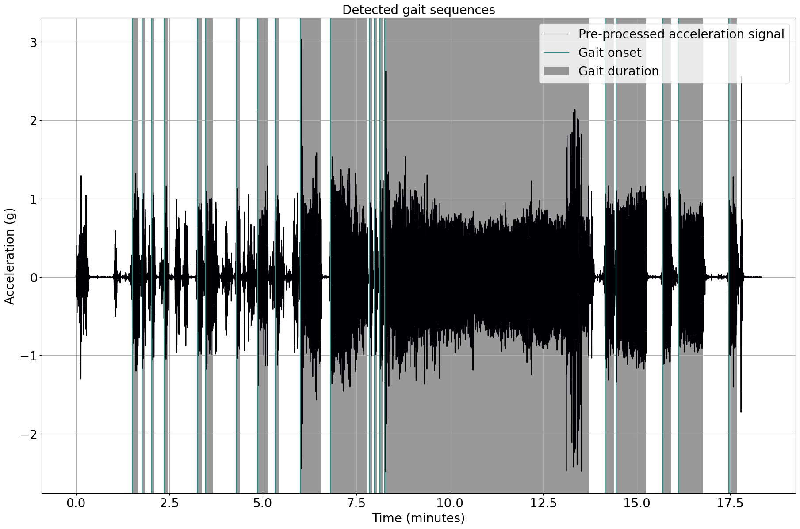

Tutorial: Load data into an KielMATRecording object
Author: Julius Welzel
Last update: Fri 22 Mar 2024
Learning objectives
By the end of this tutorial:
- you can load data and channel information into an
KielMATRecordingobject - you can add Recording specific information to the
KielMATRecordingobject - you are educated about the relationship between a
KielMATRecordingobject and the BIDS standard.
Imports
We start by importing some Python libraries. You should be familiar with most of them, and we will not discuss them here.
import pandas as pd
from kielmat.utils.kielmat_dataclass import KielMATRecording # Import the KielMATRecording class
from kielmat.modules.gsd import ParaschivIonescuGaitSequenceDetection # Import the Gait Sequence Detection module
Read the raw data and metadata into python
Let us consider a single recording, a accelerometer located at the lower back. The sensor only provided the raw data in a csv file without any metadata. We only know the metadata from the sensor manual and from setting up the sensor. Depending on the sensor, the metadata might be stored in a separate file or in the same file as the raw data as a header.
To import data from your own devices, check if KielMAT already has a reader for your device. If not, you can write your own reader and contribute it to the KielMAT project.
# Set the url for the raw data on GH
file_url = 'https://raw.githubusercontent.com/neurogeriatricskiel/KielMAT/main/examples/data/ExampleAccelDataRaw.csv'
# read the csv data from the url
acc_data = pd.read_csv(file_url)
# specifiy the sampling rate
fs = 100 # Hz
We have loaded the data for one tracking systems, LB_ACCEL. We know we have three channels: x, y, and z. We also know that the data is sampled at 100 Hz.
Let's check if the data is loaded correctly. We know we have a good 15 minutes of data with three channels representing acceleration.
n_channels = acc_data.shape[1]
n_samples = acc_data.shape[0]
# check how many minutes of data we have
n_minutes = n_samples/fs/60
print(f"Minutes of data: {n_minutes:.2f}")
Minutes of data: 18.33
Now we can load the data into an KielMATRecording object.
For this we have to construct the channel information oursleves. We know that the data is sampled at 100 Hz and we have three channels: x, y, and z.
For more information in the channel information, see the BIDS standard.
CAVE: If the naming of the channels df is not following the BIDS standard, you will receive an error.
# construct the channel information
tracked_point = "lowerBack"
n_channels = acc_data.shape[1] # second dimension of the data represents the number of channels
col_names = [
f"{tracked_point}_{s}_{x}"
for s in ["ACCEL"]
for x in ["x", "y", "z"]
]
# Make the channel dictionary following the BIDS naming conventions
channels_dict = {
"name": col_names,
"component": ["x", "y", "z"] * (n_channels // 3),
"type": ["ACCEL"] * (n_channels),
"tracked_point": [tracked_point] * n_channels,
"units": ["m/s^2"] * n_channels,
"sampling_frequency": [fs] * n_channels,
}
recording = KielMATRecording(
data={"imu": acc_data}, channels={"lb_imu": pd.DataFrame(channels_dict)}
)
Ahh, perfect. Let's first inspect the channels in the dataclass.
recording.channels
{'lb_imu': name component type tracked_point units sampling_frequency
0 lowerBack_ACCEL_x x ACCEL lowerBack m/s^2 100
1 lowerBack_ACCEL_y y ACCEL lowerBack m/s^2 100
2 lowerBack_ACCEL_z z ACCEL lowerBack m/s^2 100}
Now we can run some of our modules on this data. For example, we find gait sequences in our data.
# Create an instance of the ParaschivIonescuGaitSequenceDetection class
gsd = ParaschivIonescuGaitSequenceDetection()
# Call the gait sequence detection using gsd.detect
gsd = gsd.detect(
data=recording.data["imu"], sampling_freq_Hz=fs, plot_results=True, dt_data=None
)
# Gait sequences are stored in gait_sequences_ attribute of gsd
gait_sequences = gsd.gait_sequences_
# Add events to the recording as a dictionary including tracking system and events
gait_sequence_events = gait_sequences
recording.add_events(tracking_system=tracked_point, new_events=gait_sequence_events)
# Show events and their corresponding information
print(recording.events)
20 gait sequence(s) detected.

{'lowerBack': onset duration event_type tracking_system
0 90.175 10.400 gait sequence None
1 106.075 5.600 gait sequence None
2 121.750 4.250 gait sequence None
3 141.275 5.525 gait sequence None
4 195.025 7.100 gait sequence None
5 207.850 12.325 gait sequence None
6 256.925 5.900 gait sequence None
7 291.175 16.650 gait sequence None
8 319.450 7.100 gait sequence None
9 360.350 32.375 gait sequence None
10 408.125 58.650 gait sequence None
11 470.975 4.275 gait sequence None
12 479.150 3.600 gait sequence None
13 488.100 4.650 gait sequence None
14 495.875 327.350 gait sequence None
15 848.875 14.300 gait sequence None
16 867.025 47.975 gait sequence None
17 940.975 14.025 gait sequence None
18 967.575 38.800 gait sequence None
19 1047.625 12.625 gait sequence None}
That seemed to work. Let's see how many gait sequences we found and how long they lasted on average.
n_gs = len(recording.events["lowerBack"])
mean_dur = recording.events["lowerBack"]["duration"].mean()
print(f"Mean duration of gait {n_gs:.0f} sequences: {mean_dur:.2f} seconds")
# also check the longest gait sequence
max_dur = recording.events["lowerBack"]["duration"].max()
max_dur_onset = recording.events["lowerBack"]["onset"][recording.events["lowerBack"]["duration"].idxmax()]
print(f"Longest gait sequence: {max_dur:.2f} seconds starting at about {max_dur_onset/60:.2f} minutes into the recording.")
Mean duration of gait 20 sequences: 31.67 seconds
Longest gait sequence: 327.35 seconds starting at about 8.26 minutes into the recording.
That's it for this tutorial. You have learned how to load data and channel information into an KielMATRecording object and how to add Recording specific information to the KielMATRecording object.